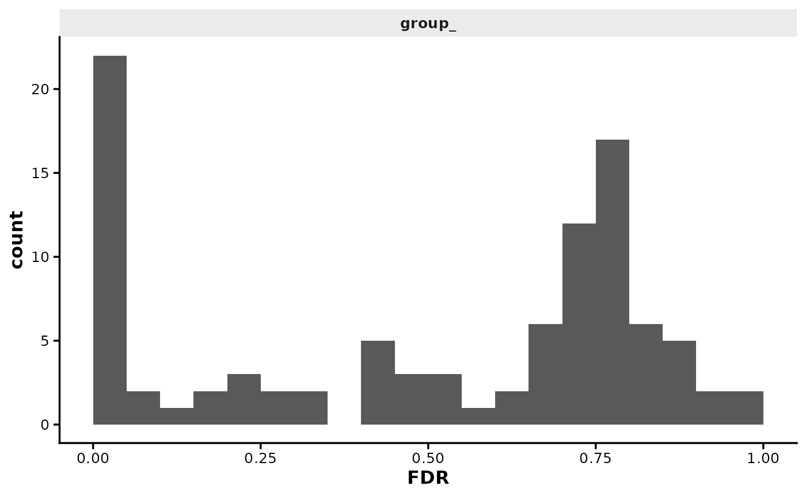

Under the hood: strategy, model and contrasts
Witold E. Wolski
2026-11-23
Source:vignettes/articles/LowLevelAPI.Rmd
LowLevelAPI.RmdPurpose
build_contrast_analysis() chains three steps:
- a strategy says which model to fit per protein,
e.g.
strategy_lm() -
build_model()fits it to every protein and returns aModel -
Contrastscomputes the contrasts from the models;ContrastsModeratedshrinks their variances with the empirical Bayes method
This article runs the steps by hand for the lm method.
Use them to inspect the per-protein models, to change one step, or to
add a new modelling backend. For analyses, use
build_contrast_analysis().
library(prolfqua)
sim <- sim_lfq_data_protein_config(n_proteins = 100, seed = 1234)
lfq <- LFQData$new(sim$data, sim$config)
contrasts <- c(AvsC = "group_A - group_Ctrl", BvsC = "group_B - group_Ctrl")The facade
fa <- build_contrast_analysis(lfq, "~ group_", contrasts, method = "lm")The same, step by step
The lm method weights each protein intensity by its
number of peptides, the column lfq$nr_children_col().
strat <- strategy_lm(paste(lfq$response(), "~ group_"), weights = lfq$nr_children_col())
mod <- build_model(lfq, strat)
contr <- Contrasts$new(mod, contrasts, model_name = "lm")
contr_mod <- ContrastsModerated$new(contr)Both give the same result:
by_facade <- dplyr::arrange(fa$get_contrasts(), protein_Id, contrast)
by_hand <- dplyr::arrange(contr_mod$get_contrasts(), protein_Id, contrast)
all.equal(by_facade$diff, by_hand$diff)## [1] TRUE
all.equal(by_facade$p.value, by_hand$p.value)## [1] TRUEThe facade keeps the intermediate objects, so you can also take them
from there: fa$model is the Model,
fa$contrast the moderated contrasts.
Inspecting the models
mod$model_df holds one row per protein with its fitted
model and fit diagnostics.
mod$model_df |>
dplyr::select(protein_Id, has_model_fit, isSingular, nr_coef_not_NA, sigma, df.residual) |>
head()## # A tibble: 6 × 6
## # Groups: protein_Id [6]
## protein_Id has_model_fit isSingular nr_coef_not_NA sigma df.residual
## <chr> <lgl> <lgl> <int> <dbl> <dbl>
## 1 0EfVhX~3967 TRUE FALSE 3 1.40 7
## 2 0m5WN4~6025 TRUE FALSE 3 2.74 8
## 3 0YSKpy~2865 TRUE FALSE 3 1.33 8
## 4 3QLHfm~8938 TRUE FALSE 3 0.907 9
## 5 3QYop0~7543 TRUE FALSE 3 2.38 9
## 6 76k03k~7094 TRUE FALSE 3 2.28 9The analysis of variance per protein, and the distribution of its FDR:
head(mod$get_anova())## # A tibble: 6 × 10
## protein_Id factor Df Sum.Sq Mean.Sq F.value p.value isSingular nr_coef
## <chr> <chr> <int> <dbl> <dbl> <dbl> <dbl> <lgl> <int>
## 1 0EfVhX~3967 group_ 2 20.1 10.1 5.15 0.0421 FALSE 3
## 2 0m5WN4~6025 group_ 2 529. 264. 35.1 0.000109 FALSE 3
## 3 0YSKpy~2865 group_ 2 0.764 0.382 0.217 0.809 FALSE 3
## 4 3QLHfm~8938 group_ 2 5.83 2.92 3.54 0.0733 FALSE 3
## 5 3QYop0~7543 group_ 2 24.9 12.5 2.20 0.167 FALSE 3
## 6 76k03k~7094 group_ 2 9.87 4.93 0.948 0.423 FALSE 3
## # ℹ 1 more variable: FDR <dbl>
mod$anova_histogram("FDR")$plot
FDR of the per-protein analysis of variance.
The model coefficients:
head(mod$get_coefficients())## # A tibble: 6 × 9
## # Groups: protein_Id [2]
## protein_Id factor Estimate Std..Error df t.value Pr...t.. isSingular
## <chr> <chr> <dbl> <dbl> <int> <dbl> <dbl> <lgl>
## 1 0EfVhX~3967 (Intercept) 22.0 0.494 7 44.5 7.53e-10 FALSE
## 2 0EfVhX~3967 group_B -2.39 0.755 7 -3.17 1.57e- 2 FALSE
## 3 0EfVhX~3967 group_Ctrl -1.37 0.755 7 -1.82 1.12e- 1 FALSE
## 4 0m5WN4~6025 (Intercept) 16.9 0.599 8 28.2 2.68e- 9 FALSE
## 5 0m5WN4~6025 group_B 6.58 0.792 8 8.31 3.32e- 5 FALSE
## 6 0m5WN4~6025 group_Ctrl 3.04 0.792 8 3.84 4.96e- 3 FALSE
## # ℹ 1 more variable: nr_coef <int>From a formula to coefficient weights
setup_analysis() treats configured predictors as
categorical labels. It converts numeric predictors and ordered factors
to character too, so ordered levels and numeric slopes are not retained
by that route. It builds the configured identifiers and retains the
analysis columns; other columns and their attributes are discarded. The
names in config$factors are the predictor names used in the
formula. Method keys, predictor names and contrast names are case
sensitive.
R normally uses treatment coding (options("contrasts")):
an intercept for the reference group and one coefficient per other
level. Character predictors are sorted, so here group_A is
the reference. The design and the coefficients of the first protein:
fit <- mod$model_df$linear_model[[1]]
unique(model.matrix(fit))## (Intercept) group_B group_Ctrl
## 1 1 0 0
## 5 1 1 0
## 10 1 0 1
coef(fit)## (Intercept) group_B group_Ctrl
## 21.994705 -2.390970 -1.372319A contrast string refers to group means, not to coefficients.
Contrasts$get_linfct() shows the weights on the
coefficients that each contrast becomes; the avg_ rows are
the mean of the two groups compared. Because A is the reference,
AvsC is minus the group_Ctrl coefficient. The
weights times the coefficients give the estimates in
get_contrasts():
weights <- contr$get_linfct()
weights## (Intercept) group_B group_Ctrl
## AvsC 0 0.0 -1.0
## BvsC 0 1.0 -1.0
## avg_AvsC 1 0.0 0.5
## avg_BvsC 1 0.5 0.5## AvsC BvsC avg_AvsC avg_BvsC
## 1.372319 -1.018651 21.308545 20.113060
dplyr::filter(contr$get_contrasts(), protein_Id == mod$model_df$protein_Id[1])[, c("contrast", "diff")]## # A tibble: 2 × 2
## contrast diff
## <chr> <dbl>
## 1 AvsC 1.37
## 2 BvsC -1.02If another level were the reference, the coefficients and the weights would change, but each contrast of group means would estimate the same difference.
Two factors and their interaction
~ Treatment * Background expands to
~ Treatment + Background + Treatment:Background. With two
levels per factor its four columns are the intercept, the Treatment
effect at the reference Background, the Background effect at the
reference Treatment, and their interaction:
sim2 <- sim_lfq_data_2factor_config(n_proteins = 50, seed = 1234)
lfq2 <- LFQData$new(sim2$data, sim2$config)
mod2 <- build_model(lfq2, strategy_lm(paste(lfq2$response(), "~ Treatment * Background")))
fit2 <- mod2$model_df$linear_model[[1]]
unique(model.matrix(fit2))## (Intercept) TreatmentB BackgroundZ TreatmentB:BackgroundZ
## 1 1 0 0 0
## 5 1 1 0 0
## 9 1 1 1 1
## 13 1 0 1 0A factor level such as TreatmentB stands for the mean
over the cells with that level, each cell weighted equally; a cell such
as `TreatmentB:BackgroundX` stands for one cell (quote cell
names with backticks because they contain a colon). A contrast may refer
to earlier contrasts by name, here to give the interaction: the change
of the B-vs-A difference between the two backgrounds.
contrasts2 <- c(
B_vs_A = "TreatmentB - TreatmentA",
B_vs_A_at_X = "`TreatmentB:BackgroundX` - `TreatmentA:BackgroundX`",
B_vs_A_at_Z = "`TreatmentB:BackgroundZ` - `TreatmentA:BackgroundZ`",
interaction = "B_vs_A_at_Z - B_vs_A_at_X"
)
contr2 <- Contrasts$new(mod2, contrasts2, model_name = "lm")
weights2 <- contr2$get_linfct()
weights2[!startsWith(rownames(weights2), "avg_"), ]## (Intercept) TreatmentB BackgroundZ TreatmentB:BackgroundZ
## B_vs_A 0 1 0 0.5
## B_vs_A_at_X 0 1 0 0.0
## B_vs_A_at_Z 0 1 0 1.0
## interaction 0 0 0 1.0## B_vs_A B_vs_A_at_X B_vs_A_at_Z interaction
## -0.4088817 -2.1299824 1.3122189 3.4422013
dplyr::filter(contr2$get_contrasts(), protein_Id == mod2$model_df$protein_Id[1])[, c("contrast", "diff")]## # A tibble: 4 × 2
## contrast diff
## <chr> <dbl>
## 1 B_vs_A -0.409
## 2 B_vs_A_at_X -2.13
## 3 B_vs_A_at_Z 1.31
## 4 interaction 3.44The weights assume categorical predictors and the usual
intercept-based coding; they do not give marginal means for continuous
covariates or other contrast codings. When a protein lacks a factor
combination, a contrast that needs a coefficient the protein cannot
estimate is NA for that protein;
build_contrast_analysis() rejects a group that is absent
from the whole dataset.
Without moderation
Contrasts alone gives the unmoderated contrasts, which
the facades do not expose. Moderation stabilises the variances estimated
from few observations:
data.frame(
contrasts = c("Contrasts", "ContrastsModerated"),
FDR_lt_0.1 = c(
sum(contr$get_contrasts()$FDR < 0.1, na.rm = TRUE),
sum(contr_mod$get_contrasts()$FDR < 0.1, na.rm = TRUE)
)
)## contrasts FDR_lt_0.1
## 1 Contrasts 30
## 2 ContrastsModerated 33Changing one step
Replace the strategy to fit another model per protein, e.g. a robust
linear model with strategy_rlm(); the other steps stay the
same.
mod_rlm <- build_model(lfq, strategy_rlm(paste(lfq$response(), "~ group_")))
contr_rlm <- ContrastsModerated$new(Contrasts$new(mod_rlm, contrasts, model_name = "rlm"))
head(contr_rlm$get_contrasts()[, c("protein_Id", "contrast", "diff", "p.value", "FDR")])## # A tibble: 6 × 5
## protein_Id contrast diff p.value FDR
## <chr> <chr> <dbl> <dbl> <dbl>
## 1 0EfVhX~3967 AvsC 1.27 0.0637 0.328
## 2 0m5WN4~6025 AvsC -3.04 0.0000345 0.000844
## 3 0YSKpy~2865 AvsC 0.144 0.829 0.985
## 4 3QLHfm~8938 AvsC -0.116 0.857 0.985
## 5 3QYop0~7543 AvsC 0.0800 0.911 0.985
## 6 76k03k~7094 AvsC 0.884 0.169 0.519Adding a backend
A facade class wraps the steps of one method.
register_facade() adds it to the registry, after which
build_contrast_analysis(method = ...) finds it.
list_facades() shows the registry:
## [1] "binomial_firth_nested" "binomial_nested" "deqms"
## [4] "deqms_voom" "firth" "hurdle_nested"
## [7] "limma" "limma_impute" "limma_voom"
## [10] "limma_voom_impute" "limpa" "limpa_nested"
## [13] "lm" "lm_impute" "lmer_nested"
## [16] "rfit" "rfit_impute" "rlm"
## [19] "ropeca_nested" "ropecaV2_nested"Session Info
## R version 4.6.2 (2026-10-29)
## Platform: x86_64-pc-linux-gnu
## Running under: Ubuntu 26.04.1 LTS
##
## Matrix products: default
## BLAS: /usr/lib/x86_64-linux-gnu/openblas-pthread/libblas.so.3
## LAPACK: /usr/lib/x86_64-linux-gnu/openblas-pthread/libopenblasp-r0.3.32.so; LAPACK version 3.12.0
##
## locale:
## [1] LC_CTYPE=C.UTF-8 LC_NUMERIC=C LC_TIME=C.UTF-8
## [4] LC_COLLATE=C.UTF-8 LC_MONETARY=C.UTF-8 LC_MESSAGES=C.UTF-8
## [7] LC_PAPER=C.UTF-8 LC_NAME=C LC_ADDRESS=C
## [10] LC_TELEPHONE=C LC_MEASUREMENT=C.UTF-8 LC_IDENTIFICATION=C
##
## time zone: UTC
## tzcode source: system (glibc)
##
## attached base packages:
## [1] stats graphics grDevices utils datasets methods base
##
## other attached packages:
## [1] prolfqua_1.9.5
##
## loaded via a namespace (and not attached):
## [1] utf8_1.2.6 sass_0.5.0 generics_0.1.4 tidyr_1.3.2
## [5] stringi_1.8.9 hms_1.1.4 digest_0.6.39 magrittr_2.0.5
## [9] evaluate_1.0.5 grid_4.6.2 RColorBrewer_1.1-3 fastmap_1.2.0
## [13] jsonlite_2.0.0 ggrepel_0.9.8 progress_1.2.3 limma_3.68.5
## [17] purrr_1.2.2 scales_1.4.0 textshaping_1.1.0 jquerylib_0.1.4
## [21] cli_3.6.6 rlang_1.3.0 crayon_1.5.3 withr_3.0.3
## [25] cachem_1.1.0 yaml_2.3.12 otel_0.3.0 tools_4.6.2
## [29] dplyr_1.2.1 ggplot2_4.0.4 vctrs_0.7.3 R6_2.6.1
## [33] lifecycle_1.0.5 stringr_1.6.0 fs_2.1.0 htmlwidgets_1.6.4
## [37] MASS_7.3-66 ragg_1.5.2 pkgconfig_2.0.3 desc_1.4.3
## [41] pkgdown_2.2.1 pillar_1.11.1 bslib_0.12.0 gtable_0.3.6
## [45] glue_1.8.1 Rcpp_1.1.2 statmod_1.5.2 systemfonts_1.3.4
## [49] xfun_0.62 tibble_3.3.1 tidyselect_1.2.1 knitr_1.52
## [53] farver_2.1.2 htmltools_0.5.9 labeling_0.4.3 rmarkdown_2.32
## [57] compiler_4.6.2 prettyunits_1.2.0 S7_1.0.0